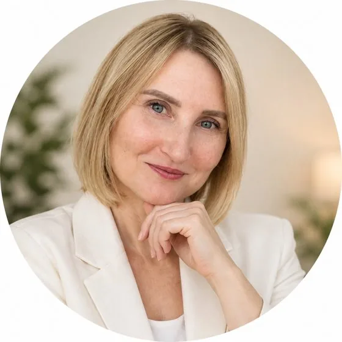

Бережно, без голодовок и жёстких ограничений
Бесплатная консультация по привычкам и снижению веса
За 20 минут обсудим, что мешает вам двигаться к стройности.
Вы получите персональный план первых шагов.
20 минут · бесплатно
Людмила ГрядунДипломированный КПТ-психолог.
Автор программы «Вместе с собой за 42 дня».
Кнопка записи всегда внизу экрана. Она откроет Telegram.
Что даст консультация
- Обсудим ваш запрос и привычки, которые хочется изменить.
- Наметим первые шаги с учётом вашего ритма жизни.
- Обсудим, подходит ли вам программа сопровождения.
20 минут — и у вас будет персональный план.
Консультация не гарантирует определённого снижения веса. Результаты индивидуальны.
От знакомства до первых шагов
Напишите в Telegram
Нажмите кнопку внизу экрана и отправьте: «Хочу на бесплатную консультацию».
Согласуем время
В переписке договоримся о времени и способе связи.
Обсудим ваш запрос
За 20 минут наметим персональный план первых шагов.
Чем я помогаю
- Учимся замечать импульсивные привычки и менять привычные реакции.
- Выстраиваем питание без голодовок и жёстких ограничений.
- Подбираем привычки, которые вписываются в вашу жизнь.
Обо мне
Я Людмила Грядун — дипломированный КПТ-психолог, инвестор и дважды мама.
Я знаю цену времени, деньгам и женской устойчивости.
Я создала программу «Вместе с собой за 42 дня». Ту, о которой когда-то мечтала сама.
Если вам нужно сопровождение
Программа стройности «Вместе с собой за 42 дня».
42 дня
Бережное сопровождение в вашем обычном ритме.
9 900 ₽
Стоимость программы. Консультация — бесплатно.
Соединяем когнитивно-поведенческий подход и работу с питанием.
Без сухих меню, марафонов и радикальных жертв.
Начните с консультации: обсудим ваш запрос и формат программы.
Перед записью
Консультация действительно бесплатная?
Да. Диагностическая консультация длится 20 минут и проводится бесплатно.
Стоимость программы сопровождения — 9 900 ₽.
Что произойдёт после нажатия кнопки?
Откроется Telegram. Отправьте: «Хочу на бесплатную консультацию».
Переход по ссылке сам по себе не оформляет запись.
Вы обещаете определённое снижение веса?
Нет. Результаты индивидуальны, фиксированного снижения веса я не обещаю.
Контакты
Для записи используйте кнопку внизу экрана.
Другие способы связи: